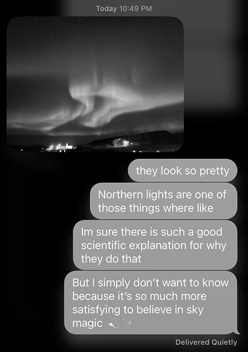

On not knowing things / believing in magic
December 1, 2023
–
In my teenage years, when questions of any sort worked their ways into conversations with my family, it was pretty normal for my brother or myself to just look up the answer online. This led to my mother adopting the phrase “Why wonder when you can Google?”, and using it quite frequently.
In more recent years however, I’ve found I often prefer to wonder. Maybe not about important things, but about the menial questions that jump into my head or that I encounter in passing, day to day.
This is something I’ve been unconsciously practicing for the last few years, but for whatever reason really became clear to me that I was doing it, and why I was doing it) a few months ago, when I was thinking about the patterns on my cat. I have no idea how pattern in the fur of cats emerges – how different follicles grow hairs of different colours.
There is no doubt a very well-researched explanation as of to why my cats fur reminds me of a procedural texture – but the way I see it, is that I could either seek out this information, half-digest it with my middling knowledge (at best) about genetics and biology, and carry that with me forever... or I can make the decision to remain ignorant to this information and continue living my life believing that my cat is made up of a little bit of magic, in absence of a better explanation.
I chose the latter.
Accessing information through technology is only becoming easier, and with that comes a culture that defines intelligence by way of knowledge accumulation. But sometimes its better, more creatively stimulating and wondrous, to maintain a childlike ignorance and to choose to believe the world is made up of many small magical things.

The northern lights photo in the screenshot above was sent to me by my friend Jeet, from his recent Iceland trip.